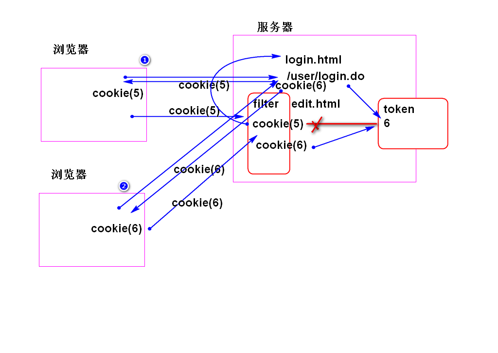

原理：

步骤：
添加更新用户信息方法 UserDao.java:
int updateUser(Map<String, Object> user);
添加SQL UserMapper.xml:
<update id="updateUser"
parameterType="map">
update
cn_user
set
<trim suffixOverrides=",">
<if test="token != null">
cn_user_token=#{token},
</if>
<if test="password != null">
cn_user_password=#{password},
</if>
<if test="nick != null">
cn_user_nick=#{nick}
</if>
</trim>
where
cn_user_id=#{id}
</update>
测试:...
重构UserServiceImpl.java 中的login方法:
...
if(user.getPassword().equals(md5)){
//业务处理
//登录成功，返回用户信息
String token=UUID.randomUUID().toString();
user.setToken(token);
Map<String, Object> data=
new HashMap<String, Object>();
data.put("id", user.getId());
data.put("token", token);
userDao.updateUser(data);
return user;
}
...
测试...
重构UserController.java 的login方法：
@RequestMapping("/login.do")
@ResponseBody
public JsonResult<User> login(String name,
String password,
HttpServletResponse response){
User user =
userService.login(name, password);
Cookie cookie = new Cookie("token",
user.getToken());
cookie.setPath("/");
response.addCookie(cookie);
return new JsonResult<User>(user);
}
提示: 这里的cookie是当前仅仅在会话期间有效。
测试： 在浏览器端检查是否存在cookie
<servlet>
<servlet-name>mvc</servlet-name>
<servlet-class>org.springframework.web.servlet.DispatcherServlet</servlet-class>
<init-param>
<param-name>contextConfigLocation</param-name>
<param-value></param-value>
</init-param>
<load-on-startup>1</load-on-startup>
</servlet>
<servlet-mapping>
<servlet-name>mvc</servlet-name>
<url-pattern>*.do</url-pattern>
</servlet-mapping>
<listener>
<listener-class>org.springframework.web.context.ContextLoaderListener</listener-class>
</listener>
<context-param>
<param-name>contextConfigLocation</param-name>
<param-value>classpath:spring-*.xml</param-value>
</context-param>
提示: 使用工具类WebApplicationContextUtils就必须使用 ContextLoaderListener 初始化Spring容器。
配置web.xml 添加过滤器配置：
<filter>
<filter-name>acl</filter-name>
<filter-class>cn.tedu.note.web.ACLFilter</filter-class>
</filter>
<filter-mapping>
<filter-name>acl</filter-name>
<url-pattern>/*</url-pattern>
</filter-mapping>
添加过滤器类 ACLFilter.java:
public class ACLFilter implements Filter{
private ServletContext sc;
private ApplicationContext ctx;
private UserService userService;
/**
* 过滤器初始化代码
* 获取了 Spring容器和UserService
*/
public void init(FilterConfig cfg)
throws ServletException {
sc= cfg.getServletContext();
//获取Spring容器
ctx=WebApplicationContextUtils
.getWebApplicationContext(sc);
//从容器中获取 UserService 对象
userService=ctx.getBean(
"userService",
UserService.class);
}
public void doFilter(
ServletRequest req,
ServletResponse res,
FilterChain chain)
throws IOException, ServletException {
HttpServletRequest request=
(HttpServletRequest) req;
HttpServletResponse response =
(HttpServletResponse) res;
String path=request.getRequestURI();
//System.out.println(path);
path = path.substring(
path.indexOf('/', 1));
//System.out.println("trim path:"+path);
if(path.matches(".*/edit\\.html$")){
checkLogin(request,response,chain);
return;
}
if(path.matches(".(note).*\\.do$")){
checkDotDo(request,response,chain);
return;
}
chain.doFilter(request, response);
}
private void checkDotDo(HttpServletRequest request, HttpServletResponse response, FilterChain chain)
throws IOException, ServletException {
//System.out.println("checkDotDo");
String token = getCookie(request, "token");
String userId= getCookie(request,"userId");
//System.out.println("userId:"+userId);
if(userService.checkToken(userId, token)){
chain.doFilter(request, response);
return;
}
//没有登录时候，返回JSON错误消息
String json="{\"state\":1,\"message\":\"必须登录！\"}";
response.setCharacterEncoding("utf-8");
response.setContentType(
"application/json;charset=UTF-8");
response.getWriter().println(json);
}
private String getCookie(HttpServletRequest request,
String cookieName) {
Cookie[] cookies=request.getCookies();
//如果客户端没有cookie，就会返回null
if(cookies!=null){
for (Cookie cookie : cookies) {
if(cookieName.equals(
cookie.getName())){
return cookie.getValue();
}
}
}
return null;
}
private void checkLogin(HttpServletRequest request, HttpServletResponse response, FilterChain chain)
throws IOException, ServletException {
//System.out.println("checkLogin");
//检查是否有 token cookie
//如果没有， 就重定向到log_in.html
String token = getCookie(request, "token");
String userId= getCookie(request,"userId");
//System.out.println("userId:"+userId);
if(userService.checkToken(userId, token)){
chain.doFilter(request, response);
return;
}
//重定向到 log_in.html
String path=request.getContextPath()+
"/log_in.html";
response.sendRedirect(path);
}
public void destroy() {
}
}
添加业务层方法 UserService.java:
boolean checkToken(String userId, String token);
实现业务层方法：
public boolean checkToken(
String userId, String token) {
if(userId==null || userId.trim().isEmpty()){
return false;
}
if(token==null || token.trim().isEmpty()){
return false;
}
User user =
userDao.findUserById(userId);
if(user==null){
return false;
}
return token.equals(user.getToken());
}
测试...
实现上述过程，并且调试。